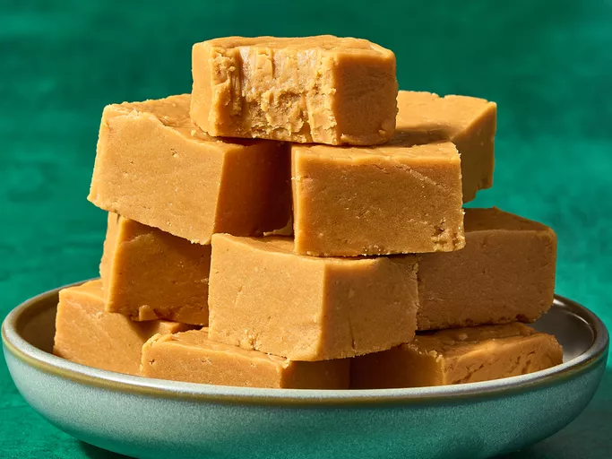

Peanut Butter Fudge

Description
This 2-ingredient peanut butter fudge is the easiest and best recipe you will ever find! And it is made in the microwave. How can you go wrong with that? Perfect last-minute gift or a sweet treat when you're in a hurry!
Ingredients
- waxed paper
- 1 (18 ounce) jar peanut butter
- 1 (12 ounce) container whipped cream cheese frosting
Steps
- Mix the two ingredients thoroughly in a bowl.
- Line a baking tray with wax paper and pour in the mixture.
- refrigerate for at least one hour before cutting up and serving.